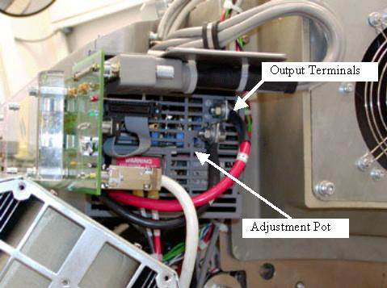

Operating Documentation
Direction 5193575-800, Rev# 5
LightSpeed 7.X Service Information - Adv
Operating Documentation |
| Required Persons | Preliminary Reqs | Procedure | Finalization |
|---|---|---|---|
| 1 | NA | 5 mins | 15 mins |
This procedure defines the necessary steps to adjust the rotating side 48V power supply.
| Item | Qty | Effectivity | Part# | Manufacturer | |
|---|---|---|---|---|---|
| Insulated POT Tweaker | 1 | - | - | - | |
| DVM | 1 | - | - | - | |
Ensure Axial drive is disabled via the service switch panel prior to adjusting the power supply.
Illustration 1 shows the rotating side 48V power supply. The adjustment pot is located just under the negative output terminal (black lead). The power supply output leads may or may not have a rubber cap over them. Be careful as the output is 48V at up to 90Amps.
Illustration 1: 48V Rotating Side Power Supply

| POTENTIAL FOR SHOCK. | |
| VOLTAGE IS PRESENT. | |
| Failure to use an Insulated voltage adjustment "Tweaker" can result in personal injury and/or component damage. |
| POTENTIAL FOR SHOCK. | |
| VOLTAGE IS PRESENT. | |
| Do NOT measure the 48 volts at the power supply output terminals. The output is 48V at up to 90Amps and a slip of the meter lead could RESULT IN PERSONAL INJURY AND/OR COMPONENT DAMAGE. |
Using an insulated pot tweaker, adjust the power supply for the specifications shown in the table below. The test points are located on the Fuse board on the front end by the cable connections.
Table 1: Power Supply Specifications
| Test Point | Description | DC Level Specifications | Noise & Ripple Peak to Peak Specification |
| TP4 | +48 VDC | +48 VDC ± 2.4 VDC | 0.48 V in 20 Mhz Bandwidth |
| TP3 | 48V RTN |
Place the QA phantom on the holder and landmark on the water section.
Start a new patient RX and perform the generic service scan from the predefined service protocols to verify proper system operation.